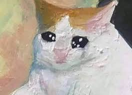
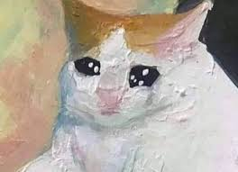

Página de michis
Imagenes de michis
 


Si quieres ver más imágenes de michis,>da click en este enlace
Listas de Michis
3 cosas que los michis aman
Jugar
Comer
Juzgar
3 cosas que los michis odian
- Tener las puertas cerradas de los cuartos
- Que no les des lo que tu comes
- Ser regañados